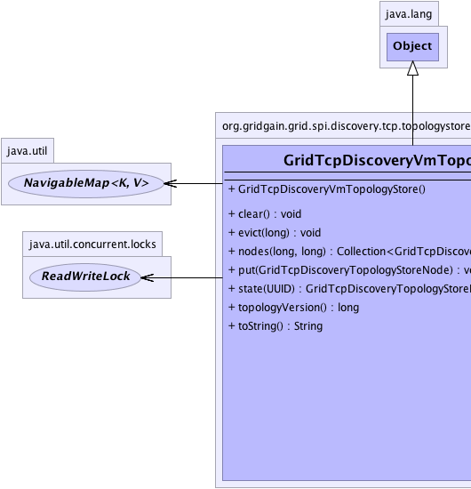
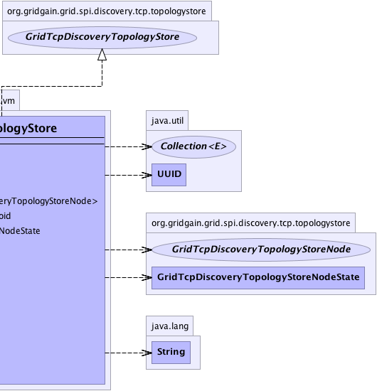

org.gridgain.grid.spi.discovery.tcp.topologystore.vm.GridTcpDiscoveryVmTopologyStore
org.gridgain.grid.spi.discovery.tcp.topologystore.vm.GridTcpDiscoveryVmTopologyStore
|
GridGain™ 3.6.0c
Community Edition |
|||||||||
| PREV CLASS NEXT CLASS | FRAMES NO FRAMES | |||||||||
| SUMMARY: NESTED | FIELD | CONSTR | METHOD | DETAIL: FIELD | CONSTR | METHOD | |||||||||
java.lang.Object
public class GridTcpDiscoveryVmTopologyStore
Local JVM-based topology store.
| Wiki | |
| Forum |
|  |  |
| Constructor Summary | |
|---|---|
GridTcpDiscoveryVmTopologyStore()
|
|
| Method Summary | |
|---|---|
void |
clear()
Clears topology and sets current version to 0. |
void |
evict(long maxTopVer)
Evicts nodes having topology version less or equal to parameter value. |
Collection<GridTcpDiscoveryTopologyStoreNode> |
nodes(long minTopVer,
long maxTopVer)
Gets all nodes with topology version greater, than the first parameter value and less or equal to the second parameter value ordered by topology version. |
void |
put(GridTcpDiscoveryTopologyStoreNode node)
Puts node to topology store. |
GridTcpDiscoveryTopologyStoreNodeState |
state(UUID id)
Gets actual node state. |
long |
topologyVersion()
Gets current topology version. |
String |
toString()
|
| Methods inherited from class java.lang.Object |
|---|
clone, equals, finalize, getClass, hashCode, notify, notifyAll, wait, wait, wait |
| Constructor Detail |
|---|
public GridTcpDiscoveryVmTopologyStore()
| Method Detail |
|---|
public long topologyVersion()
Implementation should obtain read lock for store.
topologyVersion in interface GridTcpDiscoveryTopologyStorepublic void clear()
First node in topology (coordinator) should call this method prior to putting
itself to store using GridTcpDiscoveryTopologyStore.put(GridTcpDiscoveryTopologyStoreNode).
Implementation should obtain exclusive write lock for store.
clear in interface GridTcpDiscoveryTopologyStorepublic Collection<GridTcpDiscoveryTopologyStoreNode> nodes(long minTopVer, long maxTopVer)
GridTcpDiscoveryTopologyStoreNode.topologyVersion()).
Implementation should obtain read lock for store.
nodes in interface GridTcpDiscoveryTopologyStoreminTopVer - Minimal topology version.maxTopVer - Max topology version.
public void put(GridTcpDiscoveryTopologyStoreNode node)
Coordinator puts node whenever its state changes.
Implementation should obtain exclusive write lock for store.
put in interface GridTcpDiscoveryTopologyStorenode - Node to put.public void evict(long maxTopVer)
Coordinator calls this method with the minimal topology version nodes in topology have.
Implementation should obtain exclusive write lock for store.
evict in interface GridTcpDiscoveryTopologyStoremaxTopVer - Maximum topology version to evict.
@Nullable
public GridTcpDiscoveryTopologyStoreNodeState state(UUID id)
throws GridSpiException
Implementation should obtain read lock for store.
state in interface GridTcpDiscoveryTopologyStoreGridSpiException - If any error occurs.id - Node ID.
public String toString()
toString in class Object
|
GridGain™ 3.6.0c
Community Edition |
|||||||||
| PREV CLASS NEXT CLASS | FRAMES NO FRAMES | |||||||||
| SUMMARY: NESTED | FIELD | CONSTR | METHOD | DETAIL: FIELD | CONSTR | METHOD | |||||||||
|
GridGain - Real Time Big Data
|
|

|
|